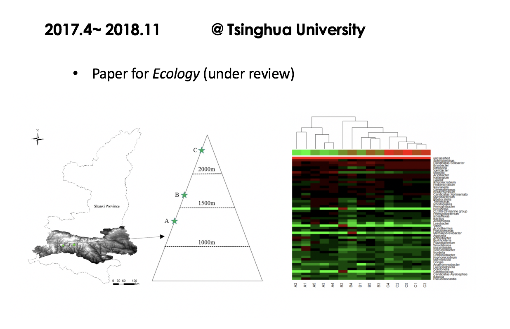

BIOGENE DIVERSITY
Soil microorganisms are important members of forest ecosystems. The spatial distribution pattern of soil microbes along with elevation was an important topic of microbial ecology research. In this study, we used 16S rRNA gene pyrosequencing methods to determine diversities and structures of bacterial communities and their functions, which may have potential effects on GHGs emissions, to examine whether elevation led to variable patterns of bacterial diversity in soils of the Qinling Mountains. The results showed that the bacterial communities diversities and structures were decided by elevation to some extent.
